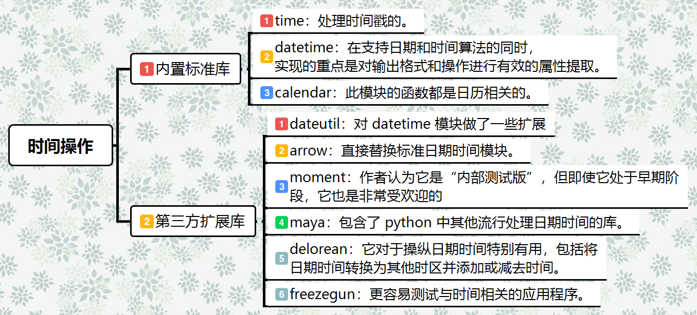
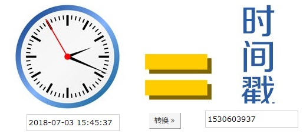
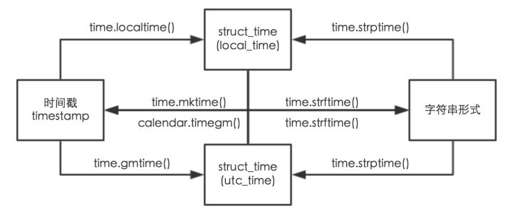
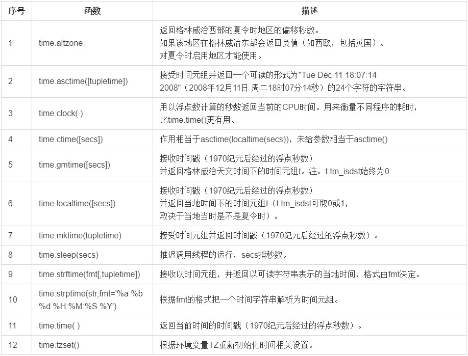
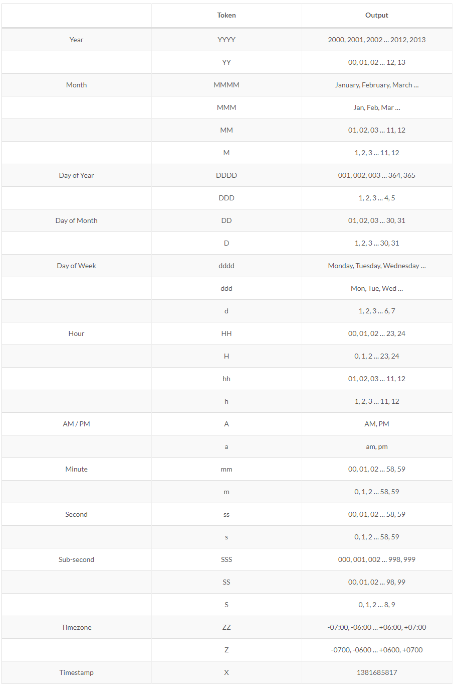

简介
在平常的代码中，我们常常需要与时间打交道。在Python中，与时间处理有关的模块就包括：time，datetime以及calendar。
- 在Python中，通常有这几种方式来表示时间：
- 时间戳
- 格式化的时间字符串
- 时间元组（struct_time）共九个元素。
由于Python的time模块实现主要调用C库，所以各个平台可能有所不同。
- UTC（Coordinated Universal Time，世界协调时）亦即格林威治天文时间，世界标准时间。在中国为UTC+8。DST（Daylight Saving Time）即夏令时。
- 时间戳（timestamp）的方式：通常来说，时间戳表示的是从1970年1月1日00:00:00开始按秒计算的偏移量。返回时间戳方式的函数主要有time()，clock()等。
- 元组（struct_time）方式：struct_time元组共有9个元素，返回struct_time的函数主要有gmtime()，localtime()，strptime()。

时间和日期
时间戳(Timestamp)
时间戳（timestamp），一个能表示一份数据在某个特定时间之前已经存在的、 完整的、 可验证的数据,通常是一个字符序列，唯一地标识某一刻的时间。使用数字签名技术产生的数据， 签名的对象包括了原始文件信息、 签名参数、 签名时间等信息。广泛的运用在知识产权保护、 合同签字、 金融帐务、 电子报价投标、 股票交易等方面。
时间戳是指格林威治时间1970年01月01日00时00分00秒(北京时间1970年01月01日08时00分00秒)起至现在的总秒数。

时间格式化(Format_time)
datetime、date、time都提供了strftime()方法，该方法接受一个格式字符串，输出日期时间的字符串表示,格式化符号如下：
| 格式符 | 含义 |
|---|---|
| %a | 星期的英文单词的缩写：如星期一， 则返回 Mon |
| %A | 星期的英文单词的全拼：如星期一，返回 Monday |
| %b | 月份的英文单词的缩写：如一月， 则返回 Jan |
| %B | 月份的引文单词的缩写：如一月， 则返回 January |
| %c | 返回datetime的字符串表示，如03/08/15 23:01:26 |
| %d | 返回的是当前时间是当前月的第几天 |
| %f | 微秒的表示： 范围: [0,999999] |
| %H | 以24小时制表示当前小时 |
| %I | 以12小时制表示当前小时 |
| %j | 返回 当天是当年的第几天 范围[001,366] |
| %m | 返回月份 范围[0,12] |
| %M | 返回分钟数 范围 [0,59] |
| %P | 返回是上午还是下午–AM or PM |
| %S | 返回秒数范围 [0,61]参看python手册 |
| %U | 返回当周是当年的第几周 以周日为第一天 |
| %W | 返回当周是当年的第几周 以周一为第一天 |
| %w | 当天在当周的天数，范围为[0, 6]，6表示星期天 |
| %x | 日期的字符串表示 ：03/08/15 |
| %X | 时间的字符串表示 ：23:22:08 |
| %y | 两个数字表示的年份 15 |
| %Y | 四个数字表示的年份 2015 |
| %z | 与utc时间的间隔 （如果是本地时间，返回空字符串） |
| %Z | 时区名称（如果是本地时间，返回空字符串） |
时间元祖(Struct_time)
返回struct_time的函数主要有gmtime()，localtime()，strptime()。
| 索引（Index） | 属性（Attribute） | 值（Values） |
|---|---|---|
| 0 | tm_year（年） | 比如2011 |
| 1 | tm_mon（月） | 1 - 12 |
| 2 | tm_mday（日） | 1 - 31 |
| 3 | tm_hour（时） | 0 - 23 |
| 4 | tm_min（分） | 0 - 59 |
| 5 | tm_sec（秒） | 0 - 61 |
| 6 | tm_wday（weekday） | 0 - 6（0表示周日） |
| 7 | tm_yday（一年中的第几天） | 1 - 366 |
| 8 | tm_isdst（是否是夏令时） | 默认为-1 |
内置标准库
Time模块
在time模块中，时间有三种表现形式：
- 时间戳，一般指Unix时间戳，是从1970年开始到现在的秒数。
- 本地时间的struct_time形式：一个长度为11的命名元组。
- UTC时间的struct_time形式：一个长度为11的命名元组，类似于本地时间，只不过为UTC时间。
其中后两者的类型一致，区别在于一个是本地时间（localtime），一个是utc时间。
各表现形式如下：1
2
3
4
5
6
7
8
9
10import time
print("time stamp:", time.time()) # 时间戳
# time stamp: 1530605181.4410665
print("local time:", time.localtime()) # 北京时间（东八区）
# local time: time.struct_time(tm_year=2018, tm_mon=7, tm_mday=3, tm_hour=16, tm_min=6, tm_sec=21, tm_wday=1, tm_yday=184, tm_isdst=0)
print("utc time:", time.gmtime()) # 世界时间
# utc time: time.struct_time(tm_year=2018, tm_mon=7, tm_mday=3, tm_hour=8, tm_min=6, tm_sec=21, tm_wday=1, tm_yday=184, tm_isdst=0)
各种时间形式和字符串之间的转换：

1 | import time |
内置函数
Time 模块包含了以下内置函数，既有时间处理的，也有转换时间格式的：

Time模块包含了以下2个非常重要的属性：
| 序号 | 属性 | 描述 |
|---|---|---|
| 1 | time.timezone | 属性time.timezone是当地时区（未启动夏令时）距离格林威治的偏移秒数（>0，美洲;<=0大部分欧洲，亚洲，非洲）。 |
| 2 | time.tzname | 属性time.tzname包含一对根据情况的不同而不同的字符串，分别是带夏令时的本地时区名称，和不带的。 |
延伸拓展
- CPU time和wall time的区别
有时候需要统计程序的运行时间，这是我们一般会做一个艰难的选择：是使用time.clock()还是time.time(),首先需要明确几个概念：CPU time和wall time。- CPU time是当CPU完全被某个进程所使用时所花费的时间，因为CPU并不是被某个进程单独占用的，在你的进程执行的这段时间中，你的进程可能只占用了其中若干的时间片（由操作系统决定），CPU时间只是处理你的进程占用的那些时间片的相加，对于这段时间中由其他进程占用的时间片是不纳入你的进程的CPU时间的。
- wall time从名字上来看就是墙上时钟的意思，可以理解为进程从开始到结束的时间，包括其他进程占用的时间。
在Python中有哥模块专门用于统计程序运行时间的模块：timeit。在timeit的源代码中针对不同的系统做了不同的定义：1
2
3
4
5
6if sys.platform == "win32":
# On Windows, the best timer is time.clock()
default_timer = time.clock
else:
# On most other platforms the best timer is time.time()
default_timer = time.time
从中我们可以看出在Windows中最好使用clock()函数，而在其他平台上最好使用time.time()。程序的执行时间总是和运行环境相关的，因为程序不可能运行在一个拥有无限的资源的环境中，而且在测量运行时间时，多次测量取平均值要比只运行一次得到的结果要更好。
Datetime模块
datatime模块重新封装了time模块，提供更多接口，该模块中包含4个主要的类：
- datetime.time：时间类，只包含时、分、秒、微秒等时间信息。
- datetime.date：日期类，只包含年、月、日、星期等日期信息。
- datetime.datetime：日期时间类，包含以上两者的全部信息。
- datetime.timedelta：时间日期差值类，用来表示两个datetime之间的差值。
datetime.time类
datetime.time(hour[ , minute[ , second[ , microsecond[ , tzinfo,[fold ]] ] ] ] )
所有参数都是可选的。 tzinfo可以是None，或者是tzinfo子类的实例。其余参数可以是整数，范围如下：
- 0 <= hour < 24，
- 0 <= minute < 60，
- 0 <= second < 60，
- 0 <= microsecond < 1000000，
- fold in [0, 1]。
1 | print(datetime.time()) |
静态字段
- time.min：time类所能表示的最小时间，time.min = time(0, 0, 0, 0)。
- time.max：time类所能表示的最大时间，time.max = time(23, 59, 59, 999999)。
- time.resolution：时间的最小单位，这里是1微秒
属性和方法
- t1.hour：时
- t1.minute：分
- t1.second：秒
- t1.microsecond：微秒
- t1.tzinfo：时区信息
- t1.replace([ hour[ , minute[ , second[ , microsecond[ , tzinfo] ] ] ] ] )：创建一个新的时间对象，用参数指定的时、分、秒、微秒代替原有对象中的属性（原有对象仍保持不变）
- t1.isoformat()：返回型如”HH:MM:SS”格式的字符串表示
- t1.strftime(fmt)：同time模块中的format
代码实例:1
2
3
4
5
6
7
8
9
10
11tm = datetime.time(9, 23, 45, 23123) # 初始化time对象
print("time:",tm) # time: 09:23:45.023123
print("时:", tm.hour) # 时: 9
print("分:", tm.minute) # 分: 23
print("秒:", tm.second) # 秒: 45
print("微秒:", tm.microsecond) # 微秒: 23123
print("时区信息:", tm.tzinfo) # 时区信息: None
print("替换对应的时间:", tm.replace(10)) # 替换对应的时间: 10:23:45.023123
print("返回格式化时间字符串:", tm.isoformat())# 返回格式化时间字符串: 09:23:45.023123
s = tm.strftime("%H:%M:%S %Z")
print("格式化字符串:", s)# 格式化字符串: 09:23:45
datetime.date类
datetime.date(year, month, day)
所有参数都是必需的。参数可以是整数，范围如下：
- MINYEAR <= year <= MAXYEAR
- 1 <= month <= 12
- 1 <= day <= number of days in the given month and year
静态方法和字段1
2
3
4- date.max、date.min：date对象所能表示的最大、最小日期；
- date.resolution：date对象表示日期的最小单位。这里是天。
- date.today()：返回一个表示当前本地日期的date对象；
- date.fromtimestamp(timestamp)：根据给定的时间戮，返回一个date对象；
代码示例1
2
3
4
5
6
7
8
9
10import time
import datetime
time_stamp = time.time()
print(time_stamp) # 1530672191.8658917
dt = datetime.date.fromtimestamp(time_stamp)
print(dt) # 2018-07-04
print(dt.min) # 0001-01-01
print(dt.max) # 9999-12-31
print(dt.resolution) # 1 day, 0:00:00
print(dt.today()) # 2018-07-04
方法和属性
- d1.year、date.month、date.day：年、月、日；
- d1.replace(year, month, day)：生成一个新的日期对象，用参数指定的年，月，日代替原有对象中的属性。（原有对象仍保持不变）
- d1.timetuple()：返回日期对应的time.struct_time对象；
- d1.weekday()：返回weekday，如果是星期一，返回0；如果是星期2，返回1，以此类推；
- d1.isoweekday()：返回weekday，如果是星期一，返回1；如果是星期2，返回2，以此类推；
- d1.isocalendar()：返回格式如(year，month，day)的元组；
- d1.isoformat()：返回格式如’YYYY-MM-DD’的字符串；
- d1.strftime(fmt)：和time模块format相同。
代码示例1
2
3
4
5
6
7
8
9
10td = datetime.date.today()
print(td) # 2018-07-04
print(td.year, td.month, td.day) # 2018 7 4
print(td.replace(month=8)) # 2018-08-04
print(td.timetuple()) # time.struct_time(tm_year=2018, tm_mon=7, tm_mday=4, tm_hour=0, tm_min=0, tm_sec=0, tm_wday=2, tm_yday=185, tm_isdst=-1)
print(td.weekday()) # 2
print(td.isoweekday()) # 3
print(td.isocalendar()) # (2018, 27, 3)
print(td.isoformat()) # 2018-07-04
print(td.strftime("%Y-%m-%d")) # 2018-07-04
datetime.datetime类
datetime.datetime (year, month, day[ , hour[ , minute[ , second[ , microsecond[ , tzinfo] ] ] ] ] )
datetime相当于date和time结合起来，年，月和日的参数是必需的。 tzinfo可以是None，或者是tzinfo子类的实例。其余参数可以是整数，范围如下：
- MINYEAR <= year <= MAXYEAR，
- 1 <= month <= 12，
- 1 <= day <= number of days in the given month and year，
- 0 <= hour < 24，
- 0 <= minute < 60，
- 0 <= second < 60，
- 0 <= microsecond < 1000000，
- fold in [0, 1]。
静态方法和字段
- datetime.today()：返回一个表示当前本地时间的datetime对象；
- datetime.now([tz])：返回一个表示当前本地时间的datetime对象，如果提供了参数tz，则获取tz参数所指时区的本地时间；
- datetime.utcnow()：返回一个当前utc时间的datetime对象；#格林威治时间
- datetime.fromtimestamp(timestamp[, tz])：根据时间戮创建一个datetime对象，参数tz指定时区信息；
- datetime.utcfromtimestamp(timestamp)：根据时间戮创建一个datetime对象；
- datetime.combine(date, time)：根据date和time，创建一个datetime对象；
- datetime.strptime(date_string, format)：将格式字符串转换为datetime对象；
代码示例1
2
3
4
5
6
7
8
9
10import time
import datetime
time_stamp = time.time()
print(datetime.datetime.today()) # 2018-07-04 13:46:57.688327
print(datetime.datetime.now()) # 2018-07-04 13:46:57.688327
print(datetime.datetime.utcnow()) # 2018-07-04 05:46:57.688327
print(datetime.datetime.fromtimestamp(time_stamp)) # 2018-07-04 13:46:57.688327
print(datetime.datetime.utcfromtimestamp(time_stamp))# 2018-07-04 05:46:57.688327
print(datetime.datetime.combine(datetime.date.today(), datetime.time(13, 23, 23, 23213))) # 2018-07-04 13:23:23.023213
print(datetime.datetime.strptime("20180111", "%Y%m%d")) # 2018-01-11 00:00:00
方法和属性
- dt.year、month、day、hour、minute、second、microsecond、tzinfo：
- dt.date()：获取date对象；
- dt.time()：获取time对象；
- dt. replace([ year[ , month[ , day[ , hour[ , minute[ , second[ , microsecond[ , tzinfo] ] ] ] ] ] ] ]):替换时间；
- dt. timetuple()：本地时间元祖；
- dt. utctimetuple()：国际时间元祖；
- dt. toordinal()：返回日期的格雷戈里序数；
- dt. weekday()：返回weekday，如果是星期一，返回0；如果是星期2，返回1，以此类推；
- dt. isocalendar ()：返回weekday，如果是星期一，返回1；如果是星期2，返回2，以此类推；
- dt. isoformat([ sep] )：返回格式如’YYYY-MM-DD’的字符串；
- dt. ctime()：返回一个日期时间的C格式字符串，等效于time.ctime(time.mktime(dt.timetuple()))；
dt. strftime (format)：和time模块format相同。
代码示例
1
2
3
4
5
6
7
8
9
10
11
12
13
14datetime_str = datetime.datetime.today()
print(datetime_str) # 2018-07-04 14:07:49.378147
print(datetime_str.year, datetime_str.month, datetime_str.day, datetime_str.hour, datetime_str.minute,
datetime_str.second, datetime_str.microsecond) # 2018 7 4 14 7 49 378147
print(datetime_str.date(), datetime_str.time()) # 2018-07-04 14:07:49.378147
print(datetime_str.replace(year=2019)) # 2019-07-04 14:07:49.378147
print(datetime_str.timetuple()) # time.struct_time(tm_year=2018, tm_mon=7, tm_mday=4, tm_hour=14, tm_min=7, tm_sec=49, tm_wday=2, tm_yday=185, tm_isdst=-1)
print(datetime_str.utctimetuple()) # time.struct_time(tm_year=2018, tm_mon=7, tm_mday=4, tm_hour=14, tm_min=7, tm_sec=49, tm_wday=2, tm_yday=185, tm_isdst=0)
print(datetime_str.toordinal()) # 736879
print(datetime_str.weekday()) # 2
print(datetime_str.isoweekday()) # 3
print(datetime_str.isoformat()) # 2018-07-04T14:07:49.378147
print(datetime_str.ctime()) # Wed Jul 4 14:07:49 2018
print(datetime_str.strptime("20191222", "%Y%m%d")) # 2019-12-22 00:00:00
datetime.timedelta类
datetime.timedelta(days=0, seconds=0, microseconds=0, milliseconds=0, minutes=0, hours=0, weeks=0)
使用timedelta可以很方便的在日期上做天days，小时hour，分钟，秒，毫秒，微妙的时间计算，如果要计算月份则需要另外的办法。所有参数都是可选的，默认为0。参数可能是整数或浮点数，可能是正数或负数。
支持的操作
| Operation | Result |
|---|---|
| t1 = t2 + t3 | Sum of t2 and t3. Afterwards t1-t2 == t3 and t1-t3 == t2 are true. (1) |
| t1 = t2 - t3 | Difference of t2 and t3. Afterwards t1 == t2 - t3 and t2 == t1 + t3 are true. (1) |
| t1 = t2 i or t1 = i t2 | Delta multiplied by an integer. Afterwards t1 // i == t2 is true, provided i != 0. |
| In general, t1 i == t1 (i-1) + t1 is true. (1) | |
| t1 = t2 f or t1 = f t2 | Delta multiplied by a float. The result is rounded to the nearest multiple of timedelta.resolution using round-half-to-even. |
| f = t2 / t3 | Division (3) of t2 by t3. Returns a float object. |
| t1 = t2 / f or t1 = t2 / i | Delta divided by a float or an int. The result is rounded to the nearest multiple of timedelta.resolution using round-half-to-even. |
| t1 = t2 // i or t1 = t2 // t3 | The floor is computed and the remainder (if any) is thrown away. In the second case, an integer is returned. (3) |
| t1 = t2 % t3 | The remainder is computed as a timedelta object. (3) |
| q, r = divmod(t1, t2) | Computes the quotient and the remainder: q = t1 // t2 (3) and r = t1 % t2. q is an integer and r is a timedelta object. |
| +t1 | Returns a timedelta object with the same value. (2) |
| -t1 | equivalent to timedelta(-t1.days, -t1.seconds, -t1.microseconds), and to t1* -1. (1)(4) |
| str(t) | Returns a string in the form [D day[s], ][H]H:MM:SS[.UUUUUU], where D is negative for negative t. (5) |
| repr(t) | Returns a string representation of the timedelta object as a constructor call with canonical attribute values. |
abs(t)| equivalent to +t when t.days >= 0, and to -t when t.days < 0. (2)|
calendar模块
此模块的函数都是日历相关的，例如打印某月的字符月历。星期一是默认的每周第一天，星期天是默认的最后一天。更改设置需调用calendar.setfirstweekday()函数。
代码示例1
2
3
4
5
6
7
8
9
10import calendar
print(calendar.month(2018, 7))
# July 2018
# Mo Tu We Th Fr Sa Su
# 1
# 2 3 4 5 6 7 8
# 9 10 11 12 13 14 15
# 16 17 18 19 20 21 22
# 23 24 25 26 27 28 29
# 30 31
| 序号 | 函数 | 描述 |
|---|---|---|
| 1 | calendar.calendar(year,w=2,l=1,c=6) | 返回一个多行字符串格式的year年年历，3个月一行，间隔距离为c。 每日宽度间隔为w字符。每行长度为21 W+18+2 C。l是每星期行数。 |
| 2 | calendar.firstweekday( ) | 返回当前每周起始日期的设置。默认情况下，首次载入caendar模块时返回0，即星期一。 |
| 3 | calendar.isleap(year) | 是闰年返回True，否则为false。 |
| 4 | calendar.leapdays(y1,y2) | 返回在Y1，Y2两年之间的闰年总数。 |
| 5 | calendar.month(year,month,w=2,l=1) | 返回一个多行字符串格式的year年month月日历，两行标题，一周一行。每日宽度间隔为w字符。每行的长度为7* w+6。l是每星期的行数。 |
| 6 | calendar.monthcalendar(year,month) | 返回一个整数的单层嵌套列表。每个子列表装载代表一个星期的整数。Year年month月外的日期都设为0;范围内的日子都由该月第几日表示，从1开始。 |
| 7 | calendar.monthrange(year,month) | 返回两个整数。第一个是该月的星期几的日期码，第二个是该月的日期码。日从0（星期一）到6（星期日）;月从1到12。 |
| 8 | calendar.prcal(year,w=2,l=1,c=6) | 相当于 print calendar.calendar(year,w,l,c). |
| 9 | calendar.prmonth(year,month,w=2,l=1) | 相当于 print calendar.calendar（year，w，l，c）。 |
| 10 | calendar.setfirstweekday(weekday) | 设置每周的起始日期码。0（星期一）到6（星期日）。 |
| 11 | calendar.timegm(tupletime) | 和time.gmtime相反：接受一个时间元组形式，返回该时刻的时间戳（1970纪元后经过的浮点秒数）。 |
| 12 | calendar.weekday(year,month,day) | 返回给定日期的日期码。0（星期一）到6（星期日）。月份为 1（一月） 到 12（12月）。 |
常用时间问题
获取当前的日期、时间
1 | dt = datetime.datetime.today() |
将字符串转化为日期
1 | def strtotime(str_time, format): |
给定日期向前后N天的日期
1 | import datetime |
获取给定参数的前几天的日期，返回一个list
1 | import datetime |
两个日期相隔的天数，如2018-3-4和2018-7-4
1 | import datetime |
第三方扩展库（力推arrow）
Arrow
arrow是一个提供了更易懂和友好的方法来创建、操作、格式化和转化日期、时间和时间戳的python库。可以完全替代datetime，支持python2和3。
安装
1 | pip install arrow |
使用
获取当前时间
1 | import arrow |
通过utcnow()和now()分别获取了utc时间和local时间，最终获取的是一个Arrow时间对象，通过这个对象我们可以做各种时间转换。
时间形式转换
1 | import arrow |
时间推移
时间推移就是要获取某个时间之前的时间或者之后的时间，比如要获取相对于当前时间前一天的时间。1
2
3
4
5
6t1 = arrow.now()
print("今天:",t1.date()) # 今天: 2018-07-04
print("前一天:",t1.shift(days=-1).date()) # 前一天: 2018-07-03
print("前一周",t1.shift(weeks=-1).date()) # 前一周2018-06-27
print("前两个月:",t1.shift(months=-2).date()) # 前两个月2018-05-04
print("明年:",t1.shift(years=1).date()) # 明年2019-07-04
Arrow的时间格式化
